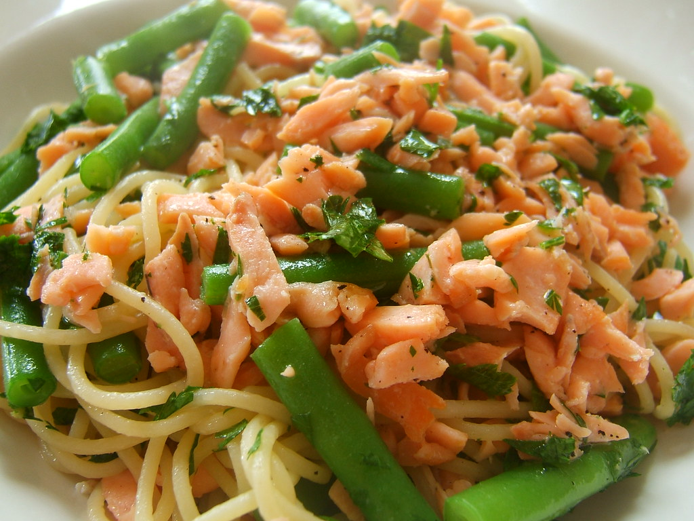

Spicy Smoked Salmon Pasta

Description
This is an easy recipe that my sister recreated after having a similar dish at a cafe, and kindly passed on to me when I had very few cooking skills to speak of. It's fresh, healthy, has plenty of flavour, and comes together very quickly.
(Note that the image above includes green beans and parsley instead of arugula and jalapeños - I recommend sticking to the ingredients in this recipe for a real kick!)
Ingredients
- 400g smoked salmon, sliced into 2cm squares
- 2 jalapeños, sliced into rounds (about 0.3cm)
- 200g arugula
- 300g spaghetti
- 4 garlic cloves, finely minced
- 1 tablespoon olive oil
- 30g parmesan cheese, thinly sliced
Steps
- Cook spaghetti according to directions.
- Prepare olive oil over medium heat in a large pan. Add garlic and cook for about 30 seconds or until lightly browned and fragrant. Add jalapeños and cook for another 30 seconds.
- Add arugula and toss until slightly wilted. Turn off the heat.
- Add spaghetti and smoked salmon. Toss well to mix thoroughly.
- To serve, add parmesan cheese to taste. This recipe makes about 4 servings.
Recipe source: my sister